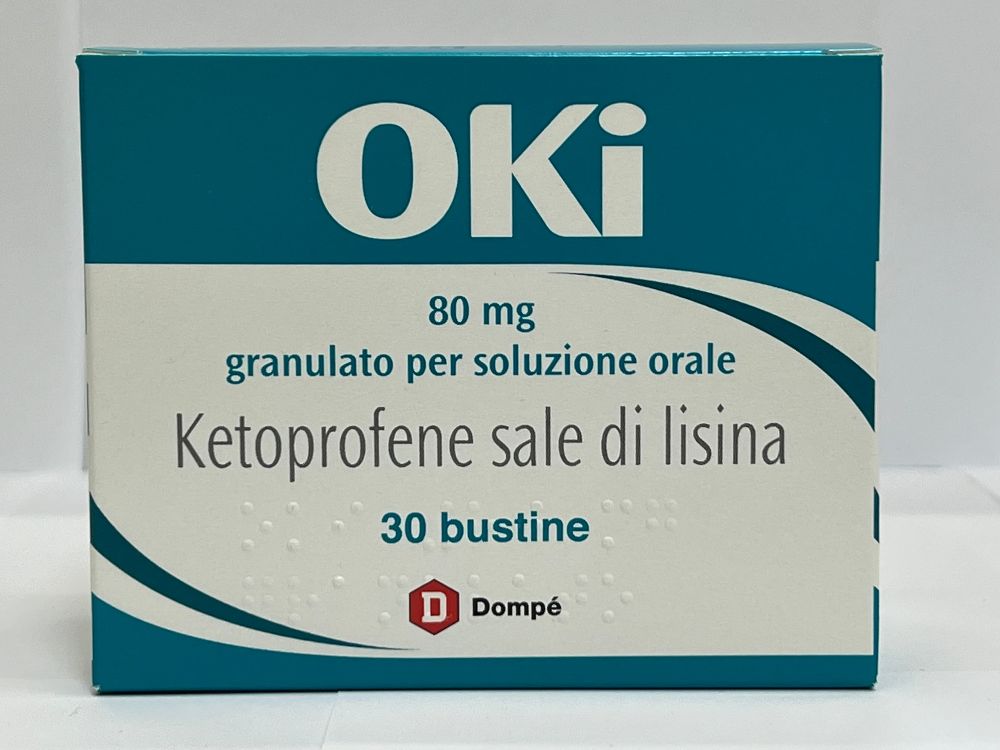

Контактна інформація:
Ціна: 350 грн/уп.
В наявності
Виробник: Італія
Ціна: 350 грн/уп.
В наявності
Саме в FarmItal ви можете купити порошок Oki, Окі,Кетопрофен в Україні, Гарантовано Якісний!
Доставка OKI здійснюється транспортними компаніями, терміни виконання замовлення обумовлюються менеджером Фармітал. Ви можете замовити ОКІ у містах: Одеса, Херсон, Чернігів, Сєверодонецьк, Бердянськ, Бровари, Дніпро, Вінниця, Київ, Слов'янськ, Полтава, Краматорськ, Біла Церква, Кам'янське, Маріуполь, Чернівці, Олександрія, Кам'янець-Подільський, Львів, Запоріжжя, Кропивницький, Житомир, Івано-Франківськ, Суми, Черкаси, Костянтинівка, Мелітополь, Кривий Ріг, Рівне, Луцьк, Нікополь, Павлоград, Ужгород, Кременчук, Лисичанськ, Хмельницький, Тернопіль, Харків, Миколаїв, а також в інших населених пунктах України.
Оральні гранули в формі порошку по 80мг № 30 - 350грн/уп.
1 пакетик містить кетопрофену 80мг;
допоміжні речовини: лактоза, целюлоза мікрокристалічна, натрію докузат, натрію бензоат, кремнію діоксид колоїдний, крохмаль кукурудзяний, магніюстеарат;
Це залежить від використовуваної формули, наприклад, максимальні передбачені дози:
3 дози Oki саше.
Дозування може бути персоналізовано лікарем на основі конкретних характеристик пацієнта (вага, стать, патології, тощо).
Для застосування у дітей дотримуйтесь інструкцій педіатра.
Кетопрофен протипоказаний хворим з підвищеною чутливістю до діючої речовину - Кетопрофену.
Зберігати у недоступному для дітей місці при кімнатній температурі 15 - 25°С.